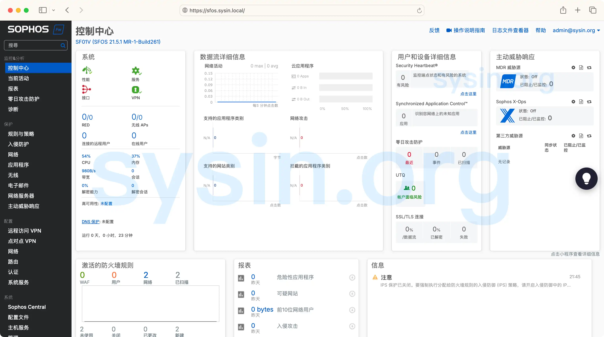

请访问原文链接：Sophos Firewall (SFOS) v21.5 MR2 - 下一代防火墙 查看最新版。原创作品，转载请保留出处。

作者主页：sysin.org
Sophos Firewall
最新发布
Sophos Firewall v21.5 MR2 现已发布
2026 年 2 月 18 日

Sophos 已于 2025 年 12 月发布了 Sophos Firewall v22.0，带来了强大的“安全即设计（Secure by Design）”增强功能，以及许多您一直期待的特性。大多数组织已经完成升级。如果您尚未升级，现在正是规划迁移的好时机。当您登录时，v22.0 更新将在 Sophos Central 以及防火墙 Web 管理控制台中提供。
如果您暂时继续使用 v21.5，那么 v21.5 MR2 现已作为一次维护版本发布。
注意：您无法从 21.5 MR2 直接升级到 22.0 GA。完成 21.5 MR2 升级后，未来将可以升级到 22.0 MR1。
Sophos Firewall v21.5 MR2 带来了以下增强：
- 增强了 Microsoft Entra ID SSO 的会话管理，以确保条件访问（Conditional Access）策略能够重新评估。该增强可防止在复用 SSO 会话时绕过 MFA。
已解决的问题：
- v21.5 MR2 共修复了 50 多项重要的可靠性、稳定性和安全性问题。
更多细节参看官方文档。
Sophos Firewall v21.5 正式发布!
发布日期：2025 年 6 月 2 日
本次版本带来了业内首创的创新功能：集成网络检测与响应（NDR），进一步增强网络中的主动威胁检测能力。
新功能概览：
- NDR Essentials
- Entra ID 单点登录用于远程访问 VPN / Sophos Connect
- DNS 防护功能
- 管理体验优化
此外，您可以查阅官方文档了解详细内容。
2024 年 10 月 17 日，Sophos Firewall v21 现已推出！
新的创新和最受需求的功能
经过数百名参与者的非常成功的抢先体验计划后，Sophos 非常高兴地宣布 Sophos Firewall OS v21 现已上市。
Sophos Firewall v21 增强了保护和性能、可扩展性和弹性，并通过多项用户体验增强简化了管理。
产品概述
远不止是防火墙

通过 Sophos 的集成和可扩展平台巩固您的网络保护，来保护您的混合网络世界。
您能得到的：
自动响应主动威胁
强大的防护和性能
安全可靠，随时随地办公
通过一个单一控制台进行管理
巩固您的网络安全
Sophos Firewall 不仅仅是一个防火墙，它还是世界上最好的网络安全平台的核心 (sysin)。通过单一厂商、云管理控制台和代理，巩固和简化您的网络安全。

Sophos Firewall 有着比任何其他防火墙更多的功能:
全面的下一代防火墙，经过优化务求应对现代加密互联网，提供行业领先的防护和性能
与 Sophos MDR 和 Sophos XDR 集成，实现自动化威胁响应和同步安全，以在威胁造成严重问题之前及时阻止
综合的 SD-WAN 功能，让您能够轻松且安全地协同和互连各个办公室与位置
与 Sophos 的云交付网络安全解决方案集成，包括 Sophos 零信任网络访问 ZTNA、DNS 防护、零日威胁防护等
内置的 ZTNA 确保远程工作人员能够安全、便捷地访问
通过 Sophos Central 提供的云管理和报告 (sysin)，您可以跨所有防火墙、无线网络、交换机、ZTNA、端点、移动设备、服务器、电子邮件防护等管理运营
下载地址
Sophos Firewall OS (SFOS) 21.0 GA (2024-10-17)
Sophos Firewall OS (SFOS) 21.0 MR1 (2025-02-20)
Sophos Firewall OS (SFOS) 21.0 MR2 (2025-08-13)
Sophos Firewall OS (SFOS) 21.5 GA (2025-06-02)
| Platform | File name |
|---|---|
| Hardware Devices - XGS Series | HW-21.5.0_GA-171.iso |
| Software Appliances - bare metal machines | SW-21.5.0_GA-171.iso |
| Virtual Appliances - VMware | VI-21.5.0_GA.VMW-171.ova |
| Virtual Appliances - KVM | VI-21.5.0_GA.HYV-171.qcow2 |
| Virtual Appliances - Xen | VI-21.5.0_GA.KVM-171.xva |
| Virtual Appliances - Hyper-V | VI-21.5.0_GA.XEN-171.vhd |
- 百度网盘链接：https://pan.baidu.com/s/18m7eNzXNXR7r2p3StWdCXQ?pwd=?<专享>
- 通过捐赠下载此版本：点击 💙支付宝 或者 💚微信支付，扫码备注邮箱（用于识别注册用户，忘记备注请提供时间），
评论区留言指定版本（默认当前最新版），在其他平台留言恕无法处理。 - 提示：捐赠或赞赏属于自愿赠予行为，提交后即表示您对作者的支持与认可。为避免误操作，请在确认前仔细检查金额，支付完成后将无法撤销或退还。
- 请指定一个平台，比如 ESXi 或 KVM。默认发送 ESXi 版本。

Sophos Firewall OS (SFOS) 21.5 MR1 (2025-10-08)
- 文件名参照 21.5 GA，获取方式同上。
Sophos Firewall OS (SFOS) 21.5 MR2 (2026-02-18)
- 文件名参照 21.5 GA，获取方式同上。
已更新：

文章用于推荐和分享优秀的软件产品及其相关技术，所有软件提供免费版或试用版。内容若侵犯了您的版权，请联系作者删除。如果您喜欢这篇文章，或者觉得它对您有所帮助，亦或发现有不当之处；欢迎发表评论，也欢迎分享这个网站，或者赞赏一下，谢谢！提示：捐赠或赞赏属于自愿赠予行为，提交后即表示您对作者的支持与认可。为避免误操作，请在确认前仔细检查金额，支付完成后将无法撤销或退还。
 支付宝赞赏
支付宝赞赏  微信赞赏
微信赞赏赞赏一下
敬请注册！点击 “登录” - “用户注册”（已知不支持 21.cn/189.cn 邮箱）。 请勿使用联合登录（已关闭）。